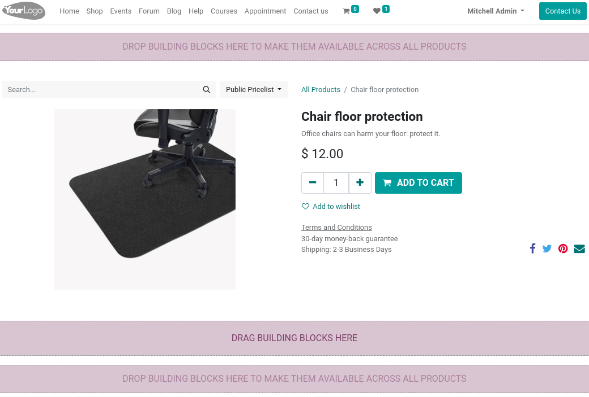
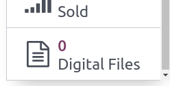

Gestión de productos¶
Odoo le permite crear, importar y gestionar las páginas de sus productos en la aplicación Sitio web.
Agregar productos al catálogo¶
Tiene varias opciones para agregar productos a su catálogo:
En cualquier lugar de su sitio web, haga clic en . Agregue el nombre de su producto y guarde.
.
Puede importar datos mediante archivos XLSX o CSV. Para hacerlo, vaya a . Haga clic en favoritos e importe los registros.
Publicar¶
Una vez creados, los productos están como sin publicar en su catálogo de Comercio electrónico. Para que un producto sea visible para los visitantes vaya a , haga clic en su página de tienda principal, seleccione el producto y configúrelo como publicado en la esquina superior derecha de la página.
Truco
Para publicar lotes grandes de productos, lo más conveniente es ir a . Ahí, elimine el filtro publicado al hacer clic en la x a su derecha y luego seleccione la vista de lista. A continuación, haga clic en el botón de interruptor desplegable (se ubica debajo del botón lista button) y habilite publicado. Haga clic en la columna publicado para reordenarla según el estado publicado o sin publicar. Por último, seleccione las casillas de los productos a publicar y marque la casilla en la columna publicado de cualquiera de ellos para publicar todos.
Diseño de página de producto¶
Una vez creado un producto, puede acceder a su página de producto al hacer clic en él en la página de la tienda y hacer clic en editar. Puede cambiar las funciones adicionales de la página, así como su diseño, agregar contenido, etc. Tome en cuenta que las funciones que habilite se aplican a todas las páginas de propducto.
Funciones adicionales¶
En la ventana del creador de sitios web haga clic en personalizar para habilitar funciones adicionales:
Clientes: calificación permite a los clientes enviar reseñas de productos; Compartir agrega botones de redes sociales y correo electrónico para compartir el producto mediante dichos canales.
Seleccionar cantidad: si se habilita, permite a los clientes elegir la cantidad que se agregará al carrito.
Indicación de impuestos: notifica si el precio incluye IVA o no.
Variantes: muestra todas las posibles variantes del producto en una lista de productos. Puede habilitar opciones para crear la variante usted mismo.
Carrito: comprar ahora agrega un botón de pago que lleva al cliente directamente a la página de pago. Lista de deseos permite agregar el producto a la lista de deseos.
Especificación: permtie seleccionar dónde se muestra la sección especificaciones. Esta opción muestra una lista con todos los atributos y valores de variantes de un producto, pero solo funciona con productos que tienen variantes.
Nota
Para permitir listas de deseos, debe habilitar la función en ;
Para acceder a la opción variantes primero debe habilitar la función variantes de producto en .
Diseño¶
Al igual que las funciones, en la pestaña personalizar puede modificar la configuración de diseño según sus necesidades.
Ancho de las imágenes: cambia el ancho de las imágenes de producto que se muestran en la página.
Diseño: el diseño de carrusel muestra una imagen principal grande, con imaágenes más pequeñas debajo, mientras que la tabla muestra cuatro imágenes en un diseño cuadrado (vea las imágenes a continuación).
Zoom de la imagen: elija en qué imágenes se puede hacer zoom, ya sea la opción abrir ventana emergente al hacer clic, al colocar el cursor sobre la imagen (lupa al pasar el cursor), ambas o ninguna.
Miniaturas: decida cómo se alinean las miniaturas, puede ser de forma vertical (izquierda) u horizontal (derecha).
Imagen principal: haga clic en remplazar para cambiar la imagen principal del producto.
Imágenes adicionales: haga clic en agregar o remover todo para agregar o eliminar las imágenes adicionales de un producto. También puede agregar imágenes y videos mediante sus URL.
Nota
Las imágenes deben estar en formato PNG o JPG. La imagen debe ser mayor a 1024x1024 para poder hacer zoom en ella.
Agregar contenido¶
Puede utilizar los bloques de creación () para agregar contenido a la página de su producto. Con estos bloques puede agregar texto y galerías de imágenes adicionales, así como funciones como llamadas a la acción, comparaciones, etc.
Dependiendo de dónde suelte el bloque de creación, este puede estar disponible solo en la página del producto o en el sitio web completo. Soltar los bloques de creación al principio o al final de la página hace que estén disponibles en el sitio web completo, mientras que los puestos bajo la descripción del producto solo se muestran en la página del producto (vea la imagen a continuación).
Enlace de descarga¶
Para agregar un archivo descargable (por ejemplo: un manual de usuario, anuncios de licitación, etc.) en la página del producto, solo arrastre y suelte un bloque de texto de en la página. Después de colocarlo, haga clic en el bloque de texto y, en la sección texto en línea, seleccione o Insertar o editar enlace e introduzca el URL en el campo su URL.
Nota
La diferencia con los archivos digitales es que estos solo se pueden descargar después del pago.
Archivos digitales¶
Si su producto se debe vender con un certificado, un manual de usuario o cualquier otro documento relevante, puede agregar un enlace de descarga para el cliente al final del pago. Para hacerlo primero debe habilitar el contenido digital en . Luego, en la plantilla del producto, haga clic en y cree un nuevo archivo.
Para configurarlos:
Nombre: el nombre de su archivo.
Tipo: seleccione si es un archivo o un URL. En consecuencia, tendrá un campo de contenido de archivo (base64) para subir su archivo, o un campo de URL para introducir su URL.
Sitio web: el sitio web en el que el archivo está disponible. Déjelo vacío si desea que esté disponible en todos sus sitios web.
El archivo estará disponible después del pago en la sección orden de compra del portal del cliente.
Configuración de productos¶
Múltiples idiomas¶
Si hay varios idiomas disponibles en su sitio web y desea traducir la información del producto, debe codificar la información traducida en la plantilla del producto. Puede identificar los campos con múltiples idiomas disponibles mediante la abreviación del idioma (por ejemplo. EN) que se encuentra junto al campo.
Los campos relacionados con Comercio electrónico para traducir son:
Nombre del producto.
Mensaje sobre falta de existencias (en la pestaña :guilabel:`ventas).
Descripción de ventas (en la pestaña ventas).
Nota
Tener contenido sin traducir en una página web puede perjudicar la experiencia del usuario y el SEO.
Nota
Para comprobar el idioma o idiomas de su sitio web vaya a .
Ver también
Disponibilidad para sitio web¶
Se puede establecer un producto como disponible en uno de sus sitios web, o en todos ellos, pero no es posible seleccionar solo algunos sitios web. Para definir la disponibilidad de un producto vaya a , seleccione su producto y en la pestaña ventas haga clic en el sitio web en el que desea que el producto esté disponible. Deje el campo vacío para que el producto esté disponible en todos los sitios web.
Gestión de existencias¶
En puede habilitar y configurar las opciones de gestión de inventario.
Importante
Para mostrar el nivel de existencias en la página del producto, el tipo de producto en el formulario del producto se debe establecer como almacenable (solo está disponible cuando se instala la aplicación Inventario).
Inventario¶
En la subsección valores predeterminados de la aplicación Inventario puede seleccionar la estrategia de venta de productos para Comercio electrónico:
Almacén: si tiene varios almacenes, puede definir el almacén vinculado con su sitio web. Si tiene varios sitios web, puede seleccionar uno para cada sitio web.
Sin existencias (seguir vendiendo): habilitar esta estrategia permite a los clientes seguir creando órdenes incluso si no hay existencias del producto. Déjelo sin seleccionar para evitar las órdenes.
Mostrar la cantidad disponible: habilitar esta estrategia muestra en la página del producto la cantidad disponible dentro de un umbral. La cantidad disponible se calcula con base en la cantidad «a la mano» menos la cantidad reservada para traslados salientes.
Vender productos en un kit¶
Si vende kits que no se empaquetaron previamente (es decir, kits compuestos de productos individuales), le recomendamos consultar la documentación relacionada para llevar el seguimiento de sus existencias.
Ver también
Comparación de productos¶
Puede habilitar una herramienta de comparación de productos para su Comercio electrónico. Para hacerlo vaya a y seleccione la opción herramienta de comparación de productos. Esta herramienta le permite guardar las especificaciones de los productos y compararlas entre sí en una sola página.
En la página del producto, baje a la sección especificaciones y haga clic en comparar. Repita el proceso para todos los productos que desea comparar. Luego, haga clic en el botón comparar de la ventana emergente en la parte inferior de página para ver el resumen de la comparación.
Nota
La herramienta de comparación de productos solo se puede utilizar si se establecieron atributos en la plantilla del producto.